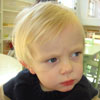
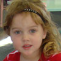
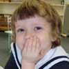
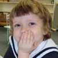

   
MSOW is a place for families to grow. We give our families ongoing support as they make the transition from parenting a toddler to parenting a child in school. We believe a strong connection to the families of our students is critical for our success.
My son, Izzy, started MSOW and in four months has experienced extraordinary emotional and intellectual growth. There can be no doubt that most of the credit goes to the talented and conscientious staff at MSOW. From learning dozens of songs/nursery rhymes to recognizing all the letters of the alphabet to knowing the days of the week, Izzy has thrived in an environment where he is nurtured, challenged and loved. Narissa, Lindsay, Paula and Olinda (not to mention special guest teachers Aznieka, Henry and Kevin) have done a tremendous job of balancing creativity, fun, learning and play in a full day (Izzy attends 9-5), where Izzy comes home brimming with new concepts and experiences (plus songs and artwork) to recount over and over again with joy. The teacher/caregivers are quite invested in his contentment and development; so I have to say (as a career educator, myself) that MSOW has surpassed my already high expectations. I can happily and enthusiastically recommend their exemplary program for any child between two and five. Izzy and his parents are indeed fortunate to have discovered MSOW! - Lee L., mother of Izzy (age 2)
"My daughter joined the MSOW family soon after turning 3 years old. She was immediately made to feel welcome by all the teachers and has blossomed both socially and cognitively. The school is the perfect size for the teachers to give each child individual attention but also large enough for the kids to learn to play, learn and share as part of a larger group.
All of the teachers are excellent at engaging with the parents and keeping them informed of what goes on during the school days. In just four months Stella has learnt French, Spanish, dancing, yoga, piano and much, much more! It truly is an exceptional school." Alisdair M., father of Stella (age 3 1/2)
"My daughter started coming to MSOW when she was 18 months old. I was so nervous! But she quickly bonded with the teachers and she loved the Montessori activities right away. In addition to the essentials, she's had exposure to Spanish, French, music and all kinds of movement (even yoga!), and she brings those influences into our home where they get incorporated into other kinds of play. I am thrilled that we found such a nurturing and supportive situation for her... and the teachers are just incredible." - Kate B., mother of Paige (age 2 1/2)
"Our son started coming to MSOW when he turned two. We were very nervous about having him start school as he is very shy and had not previously interacted much with other children. We were amazed to see how quickly he adapted to the daily routine of school and how happy he was to have other children to play with and exciting new activities to be exposed to. Since he started school, he seems to have really come out of his shell and we have already noticed the difference at home and when we interact with other friends. In addition to the Montessori activities, he specifically enjoys the wonderful exposure to music and to new languages which are a regular part of his school day. We also like that children of different ages are together in the same classroom - our son loves older children and we believe he learns a lot from them, often just by imitating what they do. The teachers are all wonderful and so nurturing, we knew right away that he would be in good hands with them. Ms. Narissa, the director of MSOW, has been incredibly accessible, accomodating, and involved from the moment our son started school. She is very much a part of the day to day activities at the school and her positive influence for the children is invaluable. We are thrilled that our son has become a part of the MSOW community, it is such a supportive and positive environment for him." Maya S., mother of Alexander (age 2).
"The teachers at the Montessori School of Washington are wonderful people who are excellent at what they do. They are warm, caring, observant, friendly, thoughtful, and fun. When I attended a parents meeting at the school prior to the school year, I was bowled over by all the wonderful things the parents said when referring to the teachers. Many of the parents had followed the teachers to MSOW from other places. Patrick is lucky to be in such a caring learning environment where he can grow and thrive." – Christina, mother of Patrick (age 3)
     

|